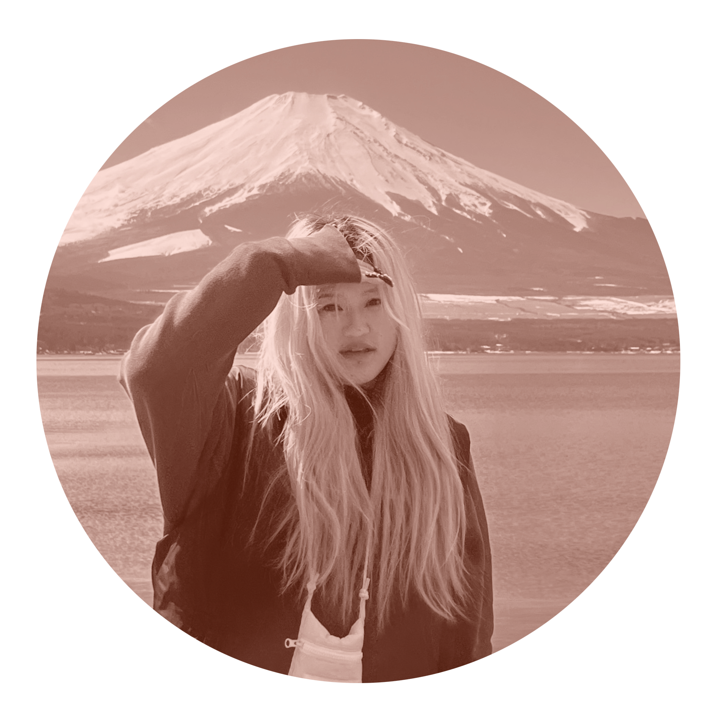
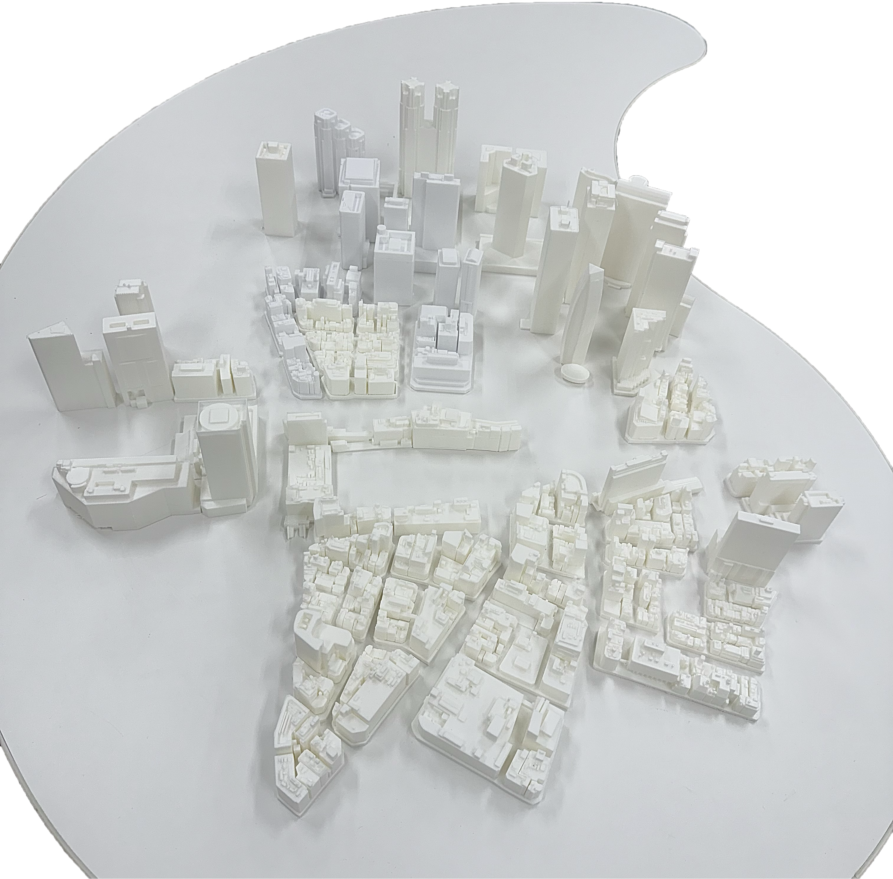
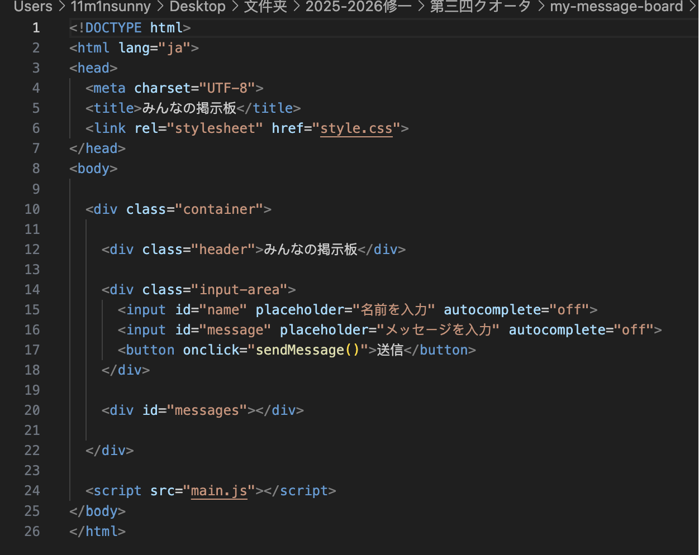
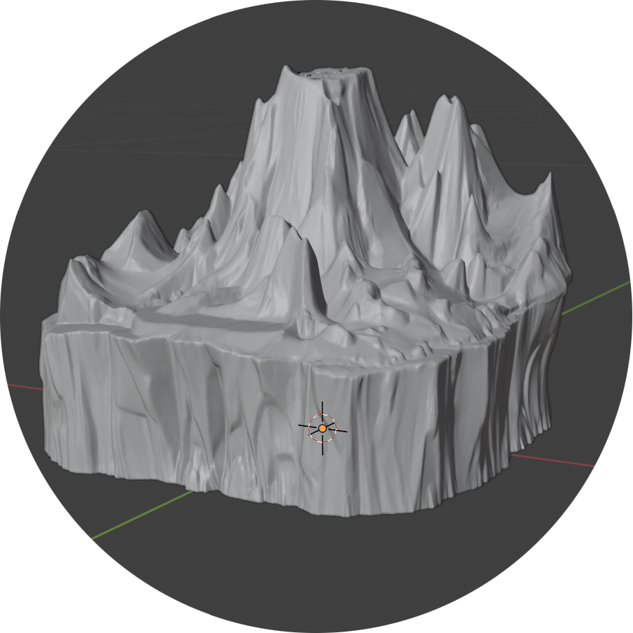
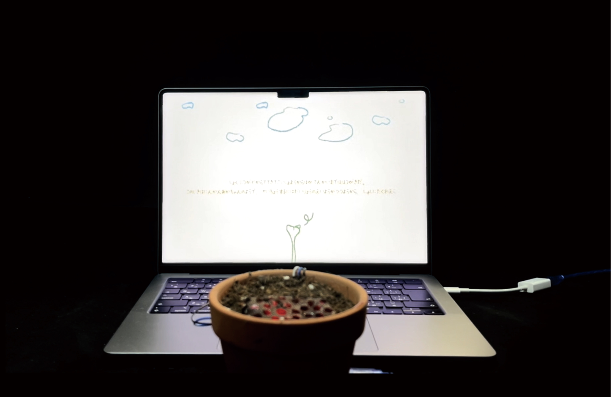
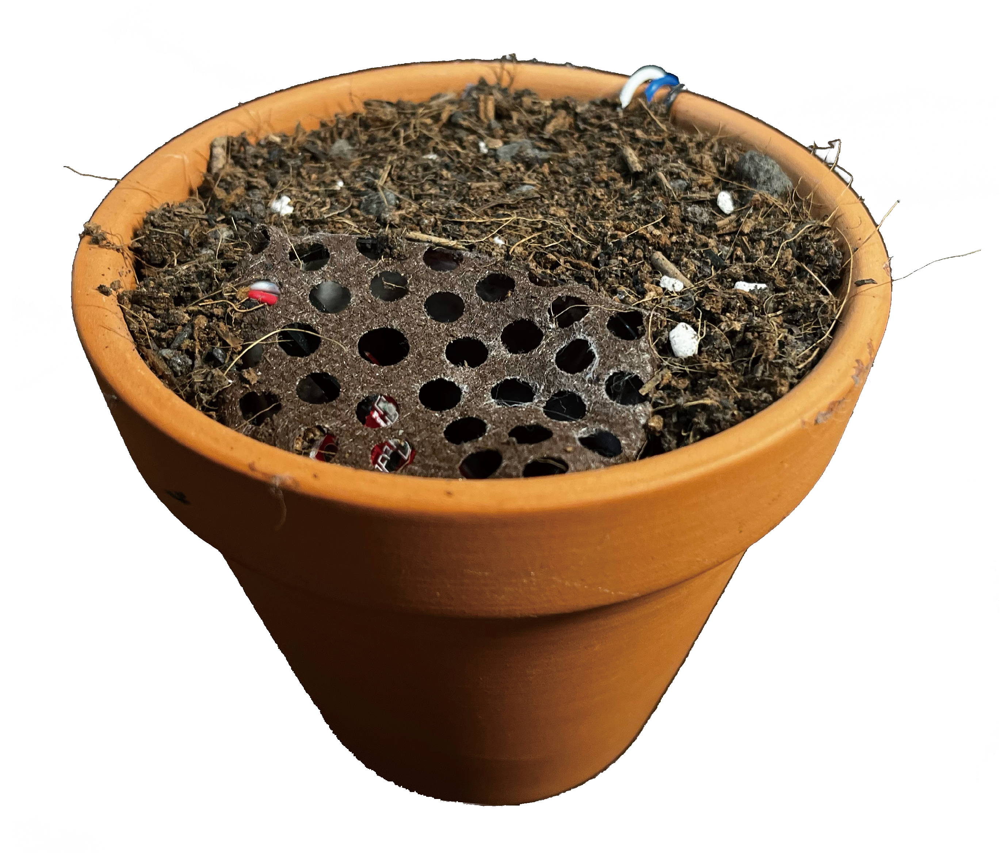
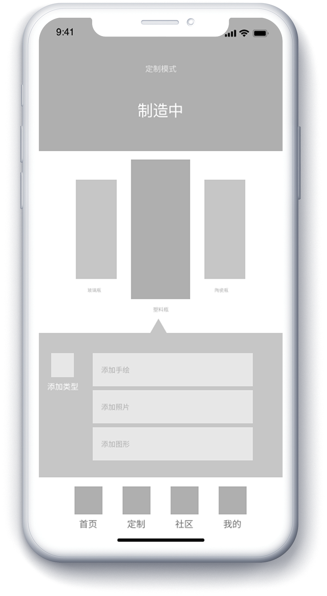
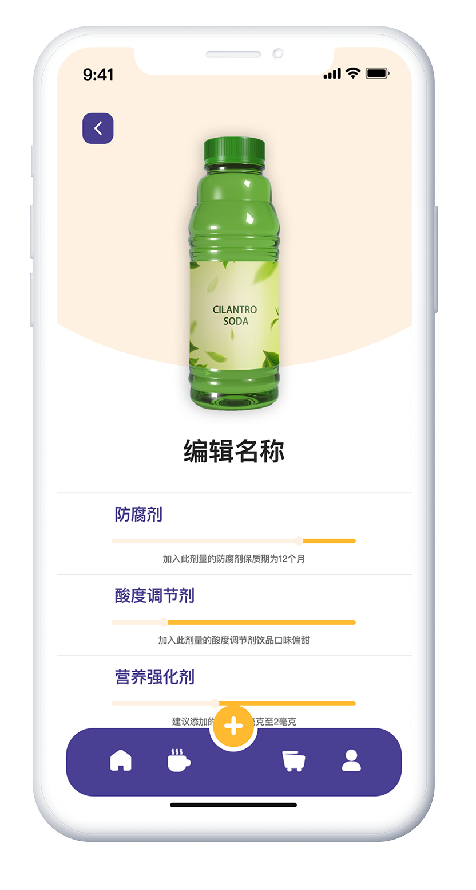

孫 儀敏SUN YIMIN
doooooouz1@gmail.com
中国山東省出身。2022年に来日し、日本語学校を経て東京工科大学大学院メディアサイエンス専攻に進学しました。学部ではデジタルメディアデザインを専攻し現在はUI/UXデザインやインタラクションデザインについて研究しています。趣味は音楽鑑賞で、ライブやコンサートにもよく足を運びます。写真や動画の撮影編集を行い、アーティストのアルバムミュージックビデオやライブ映像のビジュアル表現からデザインを学んでいます。
学歴
2014年9月-2017年6月
2017年9月-2021年6月
威海大光華国際学校 高等部山東工芸美術学院 視覚伝達設計学部 デジタルメディア専攻東京工科大学 メディア学部 研究生東京工科大学 大学院 バイオ・情報メディア研究科 メディアサイエンス専攻
2024年4月-2025年3月
2025年4月-2027年3月
スキル
Design
UI/UX Design・Prototype・User Research
Front-end
HTML・CSS・JavaScript(基礎学習中)
Tools
Photoshop・Illustrator・XD・Figma・Final Cut Pro・After Effects
趣味
写真撮影/動画撮影/動画編集
自己PR
「冷静沈着で臨機応変に行動できる性格」
予想外のことやトラブルが発生した際には、「焦っても解決に繋がらない・論理的に解決策を探す方が良い」と考えます。そのため、まず状況を整理し、何を優先すべきかを考えながら対応しています。このように困難なことがあっても、状況に応じて対応し、着実に前進していきます。
「決めたことを最後までやり抜く継続力」
幼少期から音楽や美術に親しみ、約20年間、デッサンやダンスを続けてきました。努力がすぐに成果に繋がらないこともありましたが、上達には地道な練習の積み重ねが必要だと信じて、自分の理想像に向かって努力を継続してきました。この経験を基盤として、何事も情熱と向上心をもって取り組みます。
「デザインを通して培った美的センス」
幼少期から絵を描くことが好きで、大学ではデザインを専攻しました。その中で、日本のグラフィックデザインやプロダクトデザインにも触れ、色の組み合わせや全体のバランスなど、デザインに関する知識を身につけました。現在は大学院でインタラクションデザインを学んでいます。これまでの学びを通して、美的センスを磨き、自分なりの感性を育んできました。今後は、この経験をファッションの分野でも活かしていきたいと考えています。







学業内容
学部では、UI・UXデザインやWebデザイン（HTML・CSS）を中心に学び、UI設計手法やフロントエンドの基礎知識を習得しました。UI・UXデザインでは、調査・分析から設計までの一連のプロセスとして、研究背景調査、市場調査、競合分析、ユーザーインタビューペルソナ作成、ユーザー課題・ニーズ分析、カスタマージャーニーマップ（CJM）の作成ローファイワイヤーフレームおよびハイファイプロトタイプの設計を経験しました。授業内では複数のアプリケーションのプロトタイプ設計制作に取り組みました。また、グラフィックデザインにおけるレイアウト、タイポグラフィ配色などの基礎知識も習得しました。
現在は大学院において、「3Dモデルのインタラクションによる地球温暖化危機の理解」をテーマに研究を行っています。氷山の融解による海面上昇を水とミニチュアモデルで再現したインタラクティブな装置を制作し、3Dモデリングや3Dプリンターによる模型制作、装置の見た目設計、素材選定などを行いながら、実際の環境データと対応させることで地球温暖化問題を体験的に理解できる手法について研究しています。
課外活動
大学時代は写真サークルに所属し、主に学外での撮影活動に参加していました。活動では撮影場所や集合時間、移動手段などの情報を整理共有する機会が多く、情報をまとめて円滑に進行する力が身につきました。
来日後、ドンキホーテでアルバイトとして接客業務に従事しました。業務を通じて日本語でのコミュニケーション力を高めるだけでなく部署内で役割分担を行いながら周囲のスタッフと協力して仕事に取り組みました。 また、お客様の状況に応じた柔軟な対応力を身につけるとともに、報告・連絡・相談を徹底することの大切さを学びました。
私はSNS運営に強い関心を持っており、個人でもSNSアカウントを運営しています。大学時代には、大学公式SNSアカウントの運営に2年間携わり、投稿内容の企画や素材制作アカウント更新などを担当しました。そのうち1年間はリーダーを務め、メンバーの役割分担や投稿スケジュールの管理、内容の確認を行いました。この経験を通じて情報発信力や企画力を身につけました。